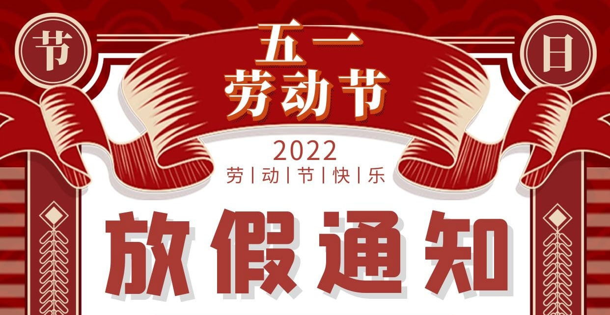

2022 年第一季度总结
这里记录下第一季度自己的一些想法，为了日后翻阅方便！
- 四月
- 一个应纪念的月份
- 向世界证明我来过
- 五月
- 给年轻人写一些建议
- 什么才是真正对你好
- 聊聊关于借钱这个事
- 六月
- 只有死鱼才随波逐流
- 程序员的常见健康问题
- 信息孤岛
- 什么是财富
- 如何和过去和解
- 人生不短
四月
万物生长此时，皆清洁而明净。故谓之清明。
一年一清明，一岁一相思。记忆中的清明节，似乎都是下着小雨，正是印证了那句“清明时节雨纷纷”。但同样也有“万物生长此时，皆清洁而明净。”清明时节，预示着春回大地，天地清明，气候转暖，万物复苏。
一 一个应纪念的月份
红豆生南国 春来发几枝 愿君多采撷 此物最相思
四月开始的第一个假期就是清明节，而清明节一般家里的长辈都不回去扫墓，现在已经交给我这辈人了。
伴随着，周而复始的雨季，我哥、我弟还有我，带着祭祀的老三样(纸钱、蜡烛和香烛)就去了清凉山。我们几家过世的老人，都安置到了一起(两横排)，所以将纸钱、香蜡分散开好多堆儿，分别放到不同的墓碑之前，依次拜祭。
很多长辈我脑海里面都已经没有映像了，还有的我根本都没有见过，甚至相片里面都没有记录过。在墓碑前跪下，点燃纸钱，嘴里念叨着。问他/她们在上面过的好吗？缺不缺钱？少什么东西可以给我们托梦。在哪里你们要互帮互助，有困难要一起解决……
如果来的都是男同志的话，虽然气氛也有些浓重，但是简单拜祭之后，该过去的也就过去了。如果家里面的女同志来的话，多少气氛有些失衡，多数情况下会痛苦流涕，勾起很多人的回忆，很多画面会一起涌现出来，留下无法掩饰的泪痕。
一年之中，总是需要有几个时间点来纪念一下，家中不在的亲人。虽然对于我们来说很多人都以无从查起，但是对于我的父亲、母亲、爷爷来说，那都是无比宝贵的回忆。很多人不在了，那就真的不在了，我们用自己的行动去缅怀他/她们，因为有些人总是需要被记住！
二 向世界证明我来过
用自己的一生去绽放美丽的花朵！
虽然我看不见这个世界，但是我希望通过我的足迹，让更多的人看到我，看到我这个普通的盲人，一样能够做很多事情。大自然对每个人都是公平公正的，无论你是谁。珠穆拉玛峰不会因为我是个盲人而额外仁慈，因为他人是富豪或精英而提供更多的便利和资源。因为大自然给了我的和给了别人的都是一样的，这就需要我们每个人靠自己的实力，一步一个脚印向上攀登。
整个珠峰的攀登过程，向导提供必要的物资和方向指引，而每一步都得我自己迈出去，甚至百分之七十的路段是需要我个人独自去通过。有人认为盲人不能做什么，只能接受家人的保护和社会的恩赐，甚至很多人会认为盲人是社会的累赘，这就会使很多残疾人不愿意走出来，对外界缺乏信任，自我封闭。这也就导致，外界对于这个群里也不会太了解。
可是，通过我的亲身经历，整个攀登的经历，我认识了各国的攀登者和朋友，他们给予了我无比的尊重。因为他们看到我和他们没有什么不一样，很多事情我都可以独立完成，我没有因为我是盲人而自卑。我当然希望我在他们眼里就是一个普普通通的登山者。但我们应该敬畏生命，而不应该危机生活，要有这种我命由我不由天的勇气，值得我们用一生来验证。
五月
万物生长此时，皆清洁而明净。故谓之清明。
国际劳动节，又称五一国际劳动节、劳动节、国际示威游行日，是世界上 80 多个国家的劳动节。国际劳动节是一项由国际劳工运动所推动，全世界劳工和工人阶级在每年的五朔节举行的庆祝节日。尽管劳动节可能与各地区春季的节日传统有关，但这一节日最早是在 1889 年国际社会主义大会上因政治原因确立的。

一 给年轻人写一些建议
永远不要为你不想成为的人工作。
不要犯同样的错误，尝试犯新的错误。
效率被高估了，休息被严重低估了。没有良好的休息，不可能有高效率。
不要追求更好的方法来尽快完成任务，而要追求更好的任务，让你做得不想停下来。
没有”准时”这回事，你要么迟到，要么早到。
回答”我要做什么？”，需要先回答”我要成为谁？”。
大约
99%的时候，正确的时间就是现在。培养
12个爱你的人，因为他们比1200万喜欢你的人更有价值。宽恕不是我们为别人做的事情，而是给我们自己的礼物。
效率被高估了，游手好闲被低估了。
当你领导时，你真正的工作是培养更多的领导者，而不是更多的追随者。
私下批评，公开表扬。
作为一个有意识的人，你的成长取决于你愿意进行多少次不舒服的对话。
自信地说话，假装自己是对的，但仔细听，假装自己是错的。
你需要三样东西: 在事情成功之前不放弃的能力，放弃不成功的事情的能力，以及帮助你区分这两者的信任。
接受教育的一半技能是学习你可以忽略的东西。
你最好的工作将是一份你不能胜任的工作，因为它让你精力充沛。事实上，只适用于你不能胜任的工作。
不要相信你认为你相信的一切。
习惯比灵感更可靠，通过养成习惯来取得进步。
为了获得丰厚的回报，对你不感兴趣的事情特别好奇。
二 什么才是真正对你好
真正对你好，并不是在生病的时候关心你，而是不然你生病！
什么才是真正对你好呢？你在生病的时候，给你送药，陪你看病，照顾你，这就是对你好了吗？可能，看过言情剧的人，大多都是这样一个套路。男主在东郊，女主在西郊，女主生病发烧了，男主不辞辛苦开车两三个小时过来送药，女主感动的不行，然后就在一起了。
可是仔细想想的话，这个套路未免有些不合理了，其实生病不重的话，自己下楼买个药吃了反而更快；即便是并比较重点的话，也可以社区诊所和医院的；除非是那种走不了，病的换天黑地，才需要其他人来帮助。为什么要多读依赖别人呢？
其实，已经跑题了，我想说的是：平时多多注意饮食，保持健康的作息和适当的锻炼，使自己保持健康，从而避免生病，这样才是真正的对自己好。
有这样的想法还是因为，肉肉前段时间发高烧，连续几天都没有好。受苦不光是自己，还有家里人(尤其是父母)，晚上得不断地物理降温还要不断地测量温度，看是否需要吃退烧药，是否需要洗澡。在社区医院看了两天，确认了是细菌引起的发烧，但是并没有大多的缓解。
最后，还是不放心又去了三甲医院再看看，因为需要抽血(不是指尖血)加之肉肉的血管有很细，最后三个护士、两个大人硬是按住才从脖子下面抽了血，看得人真的有些心痛。
这个事情住的关注的并不是抽血有多难受，看病多有麻烦，而是真正的对自己好就是尽量让肉肉不生病，在生活中要从小事上面注意，比如回家要洗手等等。就是这个道理，但这个往往并没有得到我们的重视。
三 聊聊关于借钱这个事
当你借钱给别人，你就已经决定接受收不回的风险了！
聊聊关于借钱这个事情
之前和同事聊天的时候，聊到了一个有趣的问题，就是关于借钱的事情。
比如，某天有个关系还不错的朋友说是有急事需要借五万块，保证半年之后把钱还你，然后你考虑了下，就大方的接了。但是，等到半年的时间到了，结果对方也没有还你的钱，并且连句说辞都没有。这个时候，你就感觉有些生气了。
本来凭借对方的信誉，你好心好意把钱借给了对方，但是对方的承诺却变成了遥遥无期的空头支票，这就非常尴尬了。想想，早知道就不借钱了，也不至于像现在这样甚至很恶心。如果真的是有什么事情需要延期还钱，也不是不可以，前提是的事先沟通下，不是？告诉情况，因为什么原因导致不能按时还钱，需要再拖个几个月，然后到时间一并换了。
借钱最害怕的就是，不换，要钱的像个孙子一样，还得时不时的催一催。什么谈钱伤感情，没钱更伤感情，不是。所以，有借有还，再借不难。遇到这样拖很长时间不还、或者换了的，下次在借钱那就是没有。
我属于那种不愿意欠别人钱的人，所以基本也都没有借过钱。即有钱的话多花点，没钱的话，少花点。即便是借了，也会非常快的换掉。加之，现在都有花呗之类的 app，临时用个几万块很快换掉也基本没有什么成本。
但是值得一说的是，有一朋友有这样一个有趣的观点，即：当你借钱给别人那个时刻，你就已经决定好接受收不回的风险了！他说他也有这样的一个朋友，接了自己的钱，到现在也几年多没有换了，因为工作也换了一个城市，基本也不太联系了。现在对方没有还钱给他，一方面他也知道对应有难处，一方面他也接受了承受这样的风险了。不要因为这件事情，让自己耿耿于怀，一直持续不断的影响自己的心情。反正之后不管对方是否还钱，再借钱是绝对不可能，毕竟自己赚的钱也是自己辛苦挣来的。
六月
面对日益加剧的荒漠化进程，人类生存的难度在慢慢变大！
把每年的 6 月 17 日定为 “世界防治荒漠化和干旱日”，旨在进一步提高世界各国人民对防治荒漠化重要性的认识，唤起人们防治荒漠化的责任心和紧迫感。
一 只有死鱼才随波逐流
拒绝当一条死咸鱼！
只有死鱼才会随波逐流，这是一个很好的提醒，提醒我们在生活中游走自己的道路，做真正的自己。
二 程序员的常见健康问题
忙碌的生活，让我们忘记原来健康才是最重要的！
编程其实是一种有害健康的职业，而且不知不觉就造成了你的身体伤害，希望引起大家的警惕。
- 大量的击键造成的肌肉劳损 (
RSI)，最终导致手腕疼痛。 - 长时间盯着屏幕，使得眼睛出现问题。
- 不良的坐姿导致背部肌肉紧张，最终出现背部疼痛，尤其是下背部和上肩部。
- 久坐憋尿导致的肠道和泌尿问题。
- 久坐导致痔疮和前列腺问题。
- 喝太多咖啡，导致出现身体脱水。
- 喝太多咖啡和熬夜，还导致睡眠障碍。
- 缺乏阳光导致维生素 D 缺乏。
- 缺乏运动导致的身体僵硬和酸痛。
三 信息孤岛
原理是简单的，细节是复杂的！
“知识孤岛” knowledge silos，意思是 信息无法有效融合，仿佛大海中的一个个”孤岛”。
知识肯定存在于某个地方，但是你不知道这个地方在哪里，也不知道如何到达。这就是知识时代的痛苦：太多的知识没有流动性，难以了解，难以获取，难以传播。
为了解决”知识孤岛”，这些年兴起了一种新类型的软件，叫做 “知识软件”，专门用来整理和传播知识。 因为知识其实是一种负担，越复杂的知识，对人的生理和心理的压力就越大，要求学习者做出的”减熵”努力也越大。好的知识软件，可以减轻知识的负担。
四 什么是财富
财富应该是无形的，没有人可以从你身上夺去的！
无论是商业头脑、创作能力还是投资理念，这些才是我们应该积累的财富。不要在意短期回报，忘记眼前利益，你应该把目标放在真正的财富上，不断积累经验，升级思维方式。
五 如何和过去和解
和过去的自己和解，拥抱新的世界！
如果你的过去有什么心理创伤的话（我想每个人都有），和解的方式不可能是忘记，而是接受和正视它。但有一件你不应该做的事情，那就是试图通过与他人分享来治愈自己。你自己的创伤，只有自己才能解决。
六 人生不短
最令人惊讶的是，人们并不重视自己的时间。你不会让别人偷走你的财产，但你却让别人偷走你的时间。 如果你听任自己为那些不重要的、随机出现的事情分心，那么即使你的寿命有一千年，你也会一事无成。
- 人生很短，但是如果你知道，怎么利用好这些时间，它就不短。
- 人生刚好够实现自己的一个梦想，前提是你必须从一开始，就把所有精力专注于此。
- 如果你浪费时间，不够专注，那么你没做什么事，人生就结束了。
- 真正的问题不是人生短暂，而是我们浪费了太多时间。
喜欢同时研究很多事情，一旦对某件事情产生了兴趣，就会放下手头的工作，推说稍后再回来接着做，可惜人生并没有为他留出”回过头再做”的时间。
我相信(时间都放过谁)，人生也没有为你我留出这些时间。如果你听任时间浪费在各种琐碎的用途，那你就永久失去了这些时间。只有当你能够保护好自己的时间，专注于一个方向，人生才不会那么短暂。